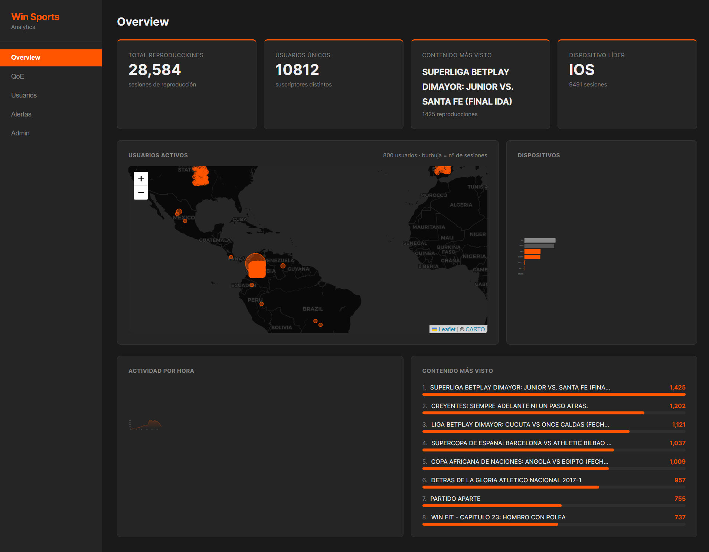

Juan José Castillo · Nicolas Aguílera Varona
Ingeniería de Datos — Universidad del Rosario
Junio 2026
¿Saben cuáles de sus usuarios van a
cancelar el próximo mes?
Lo que ya construimos
Esto ya existe. Lo construimos
con sus datos.

⬛ Screenshot real del dashboard
Guardar como
docs/dashboard.png —
captura de la pestaña Overview con datos cargados
300.000 eventos reales de Win Sports · MVP funcional construido en 7
días
Lo que puede ver Win Sports hoy
Tres cosas que sus datos ya dicen —
y nadie estaba viendo
44,7%
de las sesiones Web sufren re-buffering
En iOS es 0,1%. El problema de
calidad no es la red de sus usuarios — está localizado en el player
web. Eso se arregla una vez y mejora 4.921 sesiones.
72%
completion rate de «Garra y Corazón — Cap. 5»
Su contenido original retiene mejor que muchos partidos en vivo. Hoy
nadie está usando ese dato para decidir qué producir.
14–15h
es su hora pico real — no el prime time
2.567 sesiones a las 3 PM, el doble que a las 9 PM tarde. La pauta y
la programación están optimizadas para una audiencia que no es la
suya.
0h6h12h18h23h
Datos reales — 299.999 eventos · 28.584 sesiones · 10.812 usuarios
únicos de Win Sports
Los cuatro ejes de valor
Cuatro formas en que esto se vuelve dinero
01
Retención de suscriptores
Detectar el churn 3–4 semanas antes de que ocurra.
02
Menores costos operativos
Reportes ejecutivos automáticos. Cero trabajo manual.
03
Mejores contratos publicitarios
Vender audiencia con datos reales, no estimaciones.
04
Decisiones de contenido
Saber qué vale más antes de negociar derechos.
Eje 1 — Retención de suscriptores
Cada suscriptor que cancela ya lo había
anunciado en sus datos
3–4
semanas de anticipación del modelo de churn
→
~$197M
al año reteniendo solo el 1% mensual de una base de 50.000
suscriptores
Score de riesgo por usuario, integrado al dashboard. Su equipo de
retención sabe a quién llamar antes de que
cancele.
Eje 2 — Menores costos operativos
Cada lunes a las 7 AM,
sin que nadie lo genere
📊 Reporte semanal — WinSports Analytics
De: reportes@winsports-analytics.co · Para: dirección
ejecutiva · Lunes 7:00 AM
28.584
Sesiones esta semana
10.812
Usuarios activos
312
Usuarios en riesgo de churn
8,8%
Sesiones con re-buffering
📎 reporte_semanal.pdf — KPIs, tendencias y alertas
Eje 3 — Mejores contratos publicitarios
Hoy venden espacios con estimaciones. Con la API, venden
audiencia medida.
Casas de apuestas
BetPlay ya es el patrocinador título de la liga. Audiencia en vivo
por partido, minuto a minuto.
Clubes de fútbol
¿Cuánta gente vio a su equipo? Dato directo para negociar su propio
patrocinio.
Agencias de medios
Perfiles de audiencia por horario y dispositivo para planear pauta.
Patrocinadores
ROI medible de cada activación, con números de la plataforma.
API con autenticación, rate limiting y documentación pública — un nuevo
flujo de ingresos, no un costo
Eje 4 — Decisiones de contenido
¿Cuánto más vale transmitir a Nacional vs. el promedio de la liga?
Hoy esa respuesta no existe. Con sus datos, ya la podemos calcular.
1.425
reproducciones — Junior vs. Santa Fe (final ida)
El contenido más visto de la muestra. Ese número es plata en la
próxima negociación de derechos.
7,7%
de sus usuarios genera el 77% del consumo
835 usuarios «heavy» sostienen la plataforma. ¿Saben qué contenido
los retiene a ellos?
El plan — 5 meses
Seis entregables, cero promesas vagas
Ingesta en tiempo real — adiós a la carga manual de archivos
mes 1
Modelo de churn con score por usuario en el dashboard
meses 1–2
Reportes automáticos por correo con PDF semanal
mes 2
API para terceros con documentación pública
meses 3–4
Inteligencia de contenido con métricas editoriales
mes 4
Producción en AWS — SSL, backups y monitoreo
mes 5
El retorno
$180M
inversión única (opción completa)
vs.
$197M+
retorno estimado en 12 meses solo por retención de suscriptores
El módulo de churn paga el proyecto completo en el primer año.
Los otros tres ejes — reportes, API, contenido — son
ganancia neta.
Supuesto conservador: 1% de retención mensual sobre 50.000 suscriptores
a $32.900/mes — se recalcula con su cifra real
Por qué nosotros
✓
Su data ya está procesada
300.000 eventos reales modelados, indexados y operando. Nadie más
empieza desde ahí.
✓
Ya conocemos su arquitectura
Pipeline, modelo de datos e interfaz: resueltos. El riesgo técnico
ya quedó atrás.
✓
7 días vs. meses
Entregamos funcionando lo que una firma tradicional tarda meses en
proponer en PowerPoint.
La propuesta
Opción
Incluye
Inversión
Esencial
Deployment en producción + ingesta en tiempo real + soporte 1 mes
$120M
Profesional
Esencial + modelo de churn + reportes automáticos
$155M
Completo
Recomendado
Profesional + API para terceros + inteligencia de contenido
$180M
Pago por hitos: 30% firma · 30% primeros módulos · 30% lanzamiento · 10%
post-lanzamiento
Próximos pasos
Podemos empezar el 1 de julio
1
Lo que necesitamos de Win Sports
Acceso al stream de eventos de la plataforma y un contacto técnico
de su equipo.
2
Cómo se firma
Contrato por hitos de una página — el borrador está listo hoy para
revisión de su equipo legal.
3
Primer entregable
Ingesta en tiempo real operando en el mes 1. Resultados visibles
desde la primera semana.